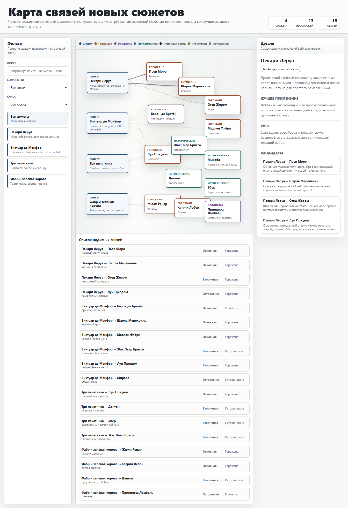

Мастерский пакет для игры
Французская революция: расчеты, персонажи, правила
Один статический сайт для GitHub Pages: интерактивные карты и симуляторы, архив 60 загрузов в читаемом HTML, новая раздача 26+14, основные правила экономики и рабочие документы ближайшего теста.

8
HTML-инструментов
60
старых загрузов
20+
ключевых документов
4 МБ
без сырого архива и аудио
Быстрый вход
Самые нужные двери для прогона, балансировки и раздачи материалов.
Симулятор
Экономический стенд Парижа 1789
Сухой прогон, сценарная матрица, Monte Carlo, чувствительность параметров и карточки ролей.
ЗагрузыСтарые персонажи и читаемые страницы
Каталог исходных исторических персонажей, горожан и роялистов с поиском, HTML-страницами и Markdown-файлами.
Новый составHTML ролей 26+14
Список игроков, ТЗ, готовые роли, поиск по доходам и сюжетам, комментарии в браузере.
ИсторияПричины, события и типы правления
Полная поисковая база по революции: от долгов и хлеба до Террора, Директории и Брюмера.
ПравилаРабочие правила первого теста
Карта, зерно, хлеб, налоги, войска, аресты, тюрьма и порядок такта.
Что входит
Расчеты и карты
Карта управляемости, цепочки, матрица, экономика, ветки, влияние, связи персонажей.
Карта сюжетных связей
Интерактивная карта новых сюжетов, связей игроков и осевого графа отношений.
Основные документы
Описание игры, механики актов, экономика, параметры, декреты, открытые вопросы мастеров.
История революции
Отдельная вкладка с поиском по причинам, событиям, режимам, группам и объяснениям, почему все пошло именно так.